Bathtub Faucet Replacement in Bennington, VT
When your bathtub faucet is beyond repair, CKV Plumbing provides dependable replacement services throughout Bennington, VT.
- Minimal Tile Disruption
- Upfront Pricing
- Pressure-Balance Valve Upgrades
- Guaranteed Workmanship
Get Steady, Safe Tub Water with a Faucet Upgrade in Bennington, VT.
Our team is ready to provide quality plumbing solutions for your home.
Your Go-To for Bathtub Faucet Replacement in Bennington, VT
CKV Plumbing provides professional bathtub faucet replacement services across Bennington, VT. Whether your faucet is leaking, corroded, or simply outdated, our skilled plumbers can handle the job efficiently.
Our expertise includes:
- All major faucet brands installed
- Replace tub spouts, diverters and handle trim kits
- Careful removal of old faucet units.

Additional Bathroom Plumbing Services in Bennington, VT
From toilets to showers, our bathroom plumbing team in Bennington, VT repairs, installs, and replaces every fixture with clean, code-compliant work.
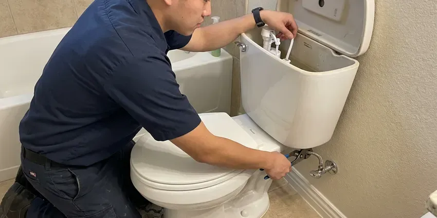
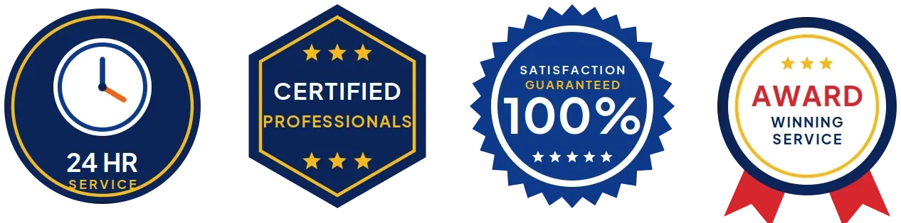
Bennington toilet repair specialists
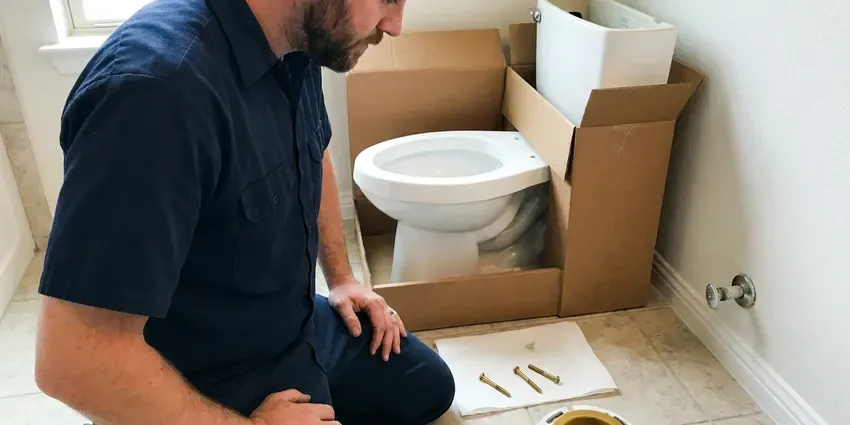
Professional toilet installation, Bennington
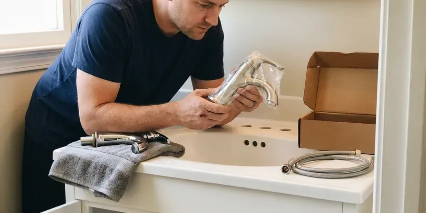
Bennington faucet installation specialists
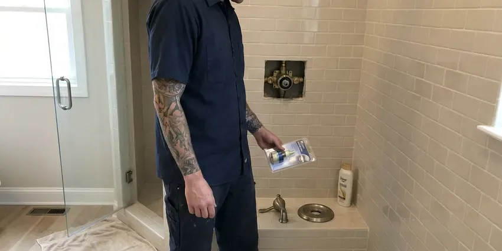
Shower Repair service for Bennington homeowners
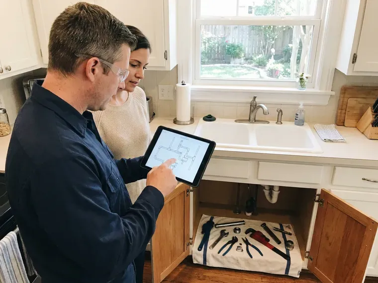
Customers
Why Choose CKV Plumbing for Bathtub Faucet Replacement in Bennington, VT?
Older two- and three-handle tub valves lack scald protection. Upgrading to a pressure-balance valve makes bath time much safer for kids and older adults.
- Local Expertise, Our plumbers are familiar with Bennington plumbing codes and frequent issues like mineral buildup from local water.
- Skilled Technicians, Our team is trained and experienced in all types of bathtub faucet replacement, ensuring a clean and efficient installation.
- Scald Protection, New valves include anti-scald features required by current code.
Citywide Coverage
CKV Plumbing is proud to serve every neighborhood in Bennington for your bathtub faucet replacement needs. No matter where you're located, our team is ready to provide prompt and professional service.
Experienced Team
The CKV Plumbing team is continually trained on the latest plumbing technologies and fixture types, so your bathtub faucet replacement is performed with the highest level of skill and care.
Safety-First Approach
We shut off the water, protect the tub surface and use heat shields when soldering near walls. All supply fittings are lead-free and every connection is pressure tested.
Trusted Certified Bennington Plumbing Services Professionals
At CKV Plumbing, we take pride in providing certified plumbing services throughout Bennington, VT. Backed by leading industry credentials, our experienced plumbers combine technical skill with genuine customer care. Whether it is repair, installation, or maintenance, we follow strict safety and quality standards to deliver long-lasting results you can trust.
Call Us Now PHCC Plumbing Contractor Recognition
PHCC Plumbing Contractor Recognition Better Business Bureau (BBB) Accreditation
Better Business Bureau (BBB) Accreditation Angi Certified Pro
Angi Certified Pro ISO 9001 Quality Management Certification
ISO 9001 Quality Management CertificationProfessional Bathtub Faucet Replacement Services in Bennington, VT
Thermostatic and Pressure-Balancing Faucets in Bennington, VT
For better comfort and safety, many homeowners opt for thermostatic or pressure-balancing bathtub faucets. These advanced fixtures maintain a consistent water temperature and prevent scalding. Our team has the expertise to correctly install these specialized faucets, ensuring they function perfectly within your plumbing system in Bennington, VT.

Cartridge and Stem Replacement in Bennington, VT
Many dripping tub faucets just need a new cartridge or stem and seat. We replace Moen 1222 and 1225 cartridges, Delta single-handle cartridges, and two-handle stems for older brands. We also clean scale from the valve body so the new part seals. This often costs much less than a full valve swap.
Leaky Bathtub Faucet Replacement in Bennington
A constant drip from your bathtub faucet can waste a lot of water and drive up utility bills. Often, internal cartridge or washer wear is the culprit, especially with older fixtures. If simple repairs aren't effective, a full replacement is often the best long-term solution. Our team can quickly remove the faulty unit and install a new, water-efficient faucet, stopping those nagging drips for good.
Delta Bathtub Faucet Replacement in Bennington, VT
Delta is a popular brand known for its innovative designs and reliable performance. If your Delta bathtub faucet is beyond repair or you're upgrading to a newer model, CKV Plumbing offers expert replacement services. We have experience with Delta's various lines, from their standard models to their more complex thermostatic units, delivering a correct and leak-free installation anywhere in Bennington, VT.
Emergency Bathtub Faucet Services in Bennington, VT
A severely leaking or broken bathtub faucet can lead to significant water waste and potential damage. CKV Plumbing offers emergency replacement services to address urgent situations quickly. If your faucet is gushing water or completely inoperable, don't hesitate to call us for fast assistance in Bennington, VT.
Emergency Tub Faucet Leak Service in Bennington
A broken stem or handle can leave water running nonstop into the tub. If you cannot shut it off at the valve stops, turn off the main and call us. We prioritize runaway faucets and carry common stems and cartridges. Quick action prevents wasted water and high bills.
Freestanding and Deck-Mount Tub Filler Installation in Bennington
Freestanding tubs need floor-mount fillers with supply lines run through the slab or floor. Deck-mount fillers sit on the tub rim or surround. We plan the rough-in, set the valve and secure the filler so it does not wobble. These installs usually happen during larger bathroom remodels.
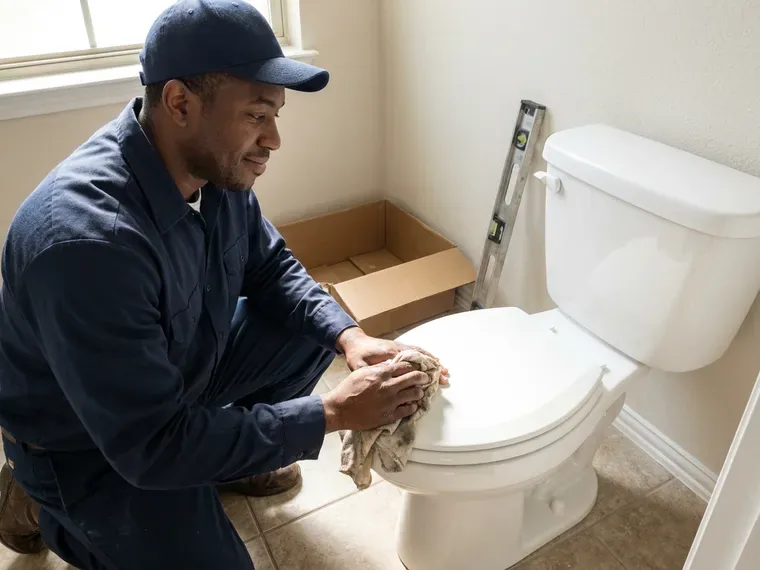
Standard Bathtub Faucet Replacement in Bennington
Whether you have a two-handle, single-handle, or a Roman tub faucet, our experts can replace it efficiently. We remove the old unit, clean the area, and install your new faucet, ensuring all connections are secure and watertight. This service addresses common issues like constant dripping, difficulty turning handles, or visible corrosion on your existing fixture.
Bathtub Faucet Installers Near Me in Bennington, VT
Don't let a leaky or broken faucet become a major inconvenience. For reliable bathtub faucet replacement near me, residents of Bennington consistently choose CKV Plumbing for our expertise and dedication to customer satisfaction.
A large share of Vermont homes rely on private wells, and well water here can range from soft to fairly hard depending on the bedrock. We know which valve brands hold up best under local conditions and will recommend durable replacements that suit your bathroom. Every job ends with a full test of hot, cold and shower settings.
CKV Plumbing at a Glance
- Licensed and insured plumbers serving Bennington, VT
- Same-day appointments and 24/7 emergency response
- Clear written estimates, no hidden fees
- 4.8-star rated by 553+ Vermont customers
Bennington Map
Bennington Information
- Population
- 8,795
- Area codes
- Local
- Service area
- Bennington and communities within 40 miles
- Nearby
- Brattleboro, Rutland, Middlebury, Barre
Replacing a bathtub faucet in Bennington, VT matters for more than looks, because a hidden leak behind the wall can damage framing, subfloors and even the foundation. Most Vermont homes have full basements, many with fieldstone or older foundations that can let in water during wet seasons.
Expert Services
Trust our professionals for reliable CKV Plumbing solutions in Bennington, VT.
Our Specialized Plumbing Services in Bennington, VT
At CKV Plumbing, we provide a complete range of plumbing services across Bennington, VT. From leak detection to full system installations, our team ensures fast, precise, and affordable service for both residential and commercial properties. Explore our core services below:
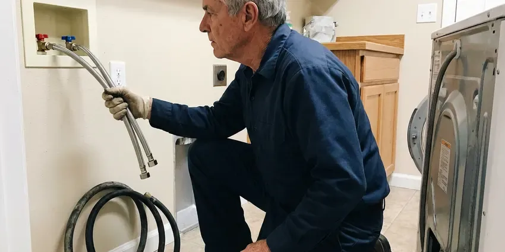
Plumbing Repair near Bennington
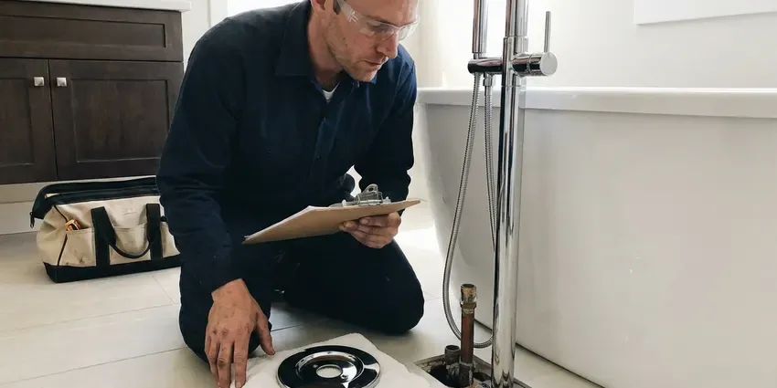
Bennington bathroom plumbing specialists
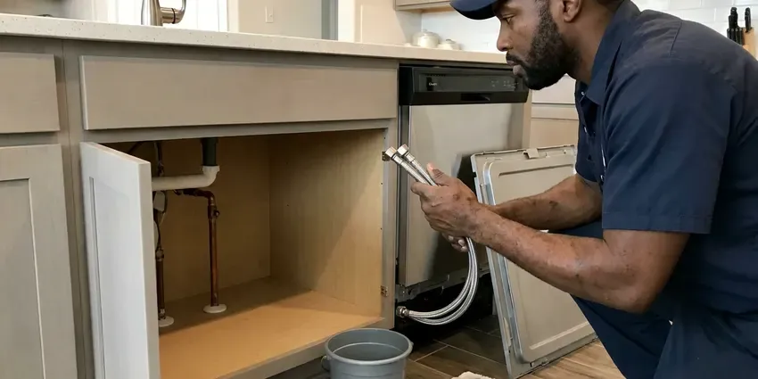
Professional kitchen plumbing, Bennington
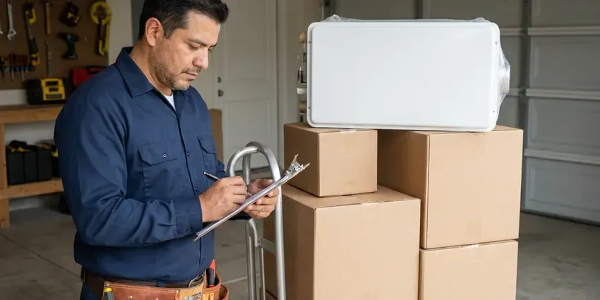
Bennington plumbing installation specialists
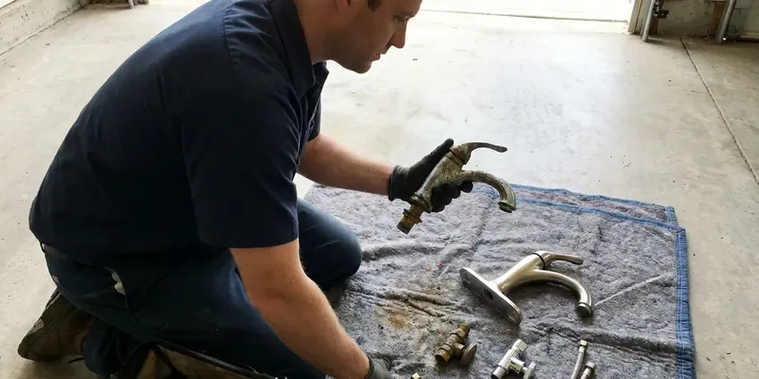
Professional plumbing replacement, Bennington
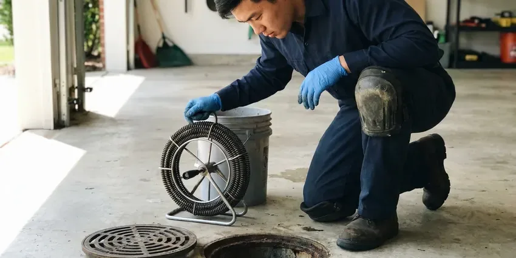
Drain Services in Bennington
How Our Bathtub Faucet Replacement Service Works in Bennington, VT
Our bathtub faucet replacement process is designed to be straightforward and efficient, minimizing disruption to your home.
Request a Quote
Contact us at (802) 209-5139 to discuss your bathtub faucet replacement needs. We'll gather initial information and schedule a convenient time for an on-site assessment.
On-Site Assessment
A certified plumber will visit your Bennington home to inspect your current faucet, assess the plumbing, and discuss your replacement options. We'll provide a clear, upfront estimate.
Professional Installation
Our team will expertly remove the old faucet and install the new one, ensuring all connections are secure and tested for leaks. We'll also clean up the work area thoroughly.
Frequently Asked Questions About Bathtub Faucet Replacement in Bennington
The cost for bathtub faucet replacement in Bennington, VT usually ranges from $250 to $600, depending on the type of faucet, complexity of the installation, and any necessary plumbing adjustments. This range includes labor and a standard replacement faucet. We provide a detailed estimate before any work begins.
Spout and handle swaps are fair DIY projects. In-wall valve replacement involves soldering or crimping and is best done by a plumber.
We install and service all major bathtub faucet brands, including Moen, Delta, Kohler, American Standard, Pfister, and many others. Our technicians are familiar with the specific installation requirements and components of various manufacturers.
Most standard bathtub faucet replacements can be completed within 2 to 4 hours. More complex installations, such as those requiring pipe modifications or involving older, corroded plumbing, might take longer. Our plumbers work efficiently to limit disruption.
While DIY replacement is possible for some, it often leads to leaks or improper function if not done correctly. Professional plumbers provide proper sealing, address any underlying issues, and confirm code compliance, saving you potential headaches and costly repairs down the line.
There are several types, including single-handle, double-handle, Roman tub fillers, and wall-mounted faucets. Each offers different style and functional benefits. We can help you choose the best type for your particular bathtub and bathroom design.
A new faucet might improve perceived water pressure if your old faucet was clogged with mineral buildup or had a restricted aerator. However, it won't fix underlying low water pressure issues coming from your home's main water supply or plumbing system.
Faucet repair involves fixing a specific component, like a washer or cartridge, to stop a leak or improve function. Replacement means installing an entirely new faucet fixture. We recommend replacement when the faucet is old, extensively corroded, or has multiple issues that make repair uneconomical.
What People Are Saying About Our Plumbing Experts?
Robert G.
The trenchless sewer replacement saved our front yard. They walked us through the camera inspection footage first so we knew exactly what we were paying for.
Sewer Line Replacement · Montpelier, VTDaniel K.
A pipe burst at 11 pm and they actually answered. The plumber showed up within the hour, shut everything down, and had us back to normal the next morning. Could not ask for more.
Emergency Plumbing · Barre, VTMark T.
When our office needed drain cleaning, CKV Plumbing provided quick, reliable service. The plumber arrived on time and made sure every drain flowed perfectly before leaving. Very satisfied.
Drain Cleaning · Rutland, VTPatricia H.
We had a slab leak that two other companies could not find. CKV Plumbing located it in under an hour, explained our options, and the price matched the quote to the dollar.
Slab Leak Repair · Barre, VTJames P.
Our commercial plumbing system had a leak under the sink, and CKV Plumbing handled it professionally. The plumbers arrived quickly and restored everything without disruption to our customers.
Commercial Plumbing · Rutland, VTSofia M.
Two new toilets installed in one visit, no mess left behind, and the tech even adjusted a faucet he noticed was dripping. Fair pricing and really friendly.
Toilet Installation · Montpelier, VT